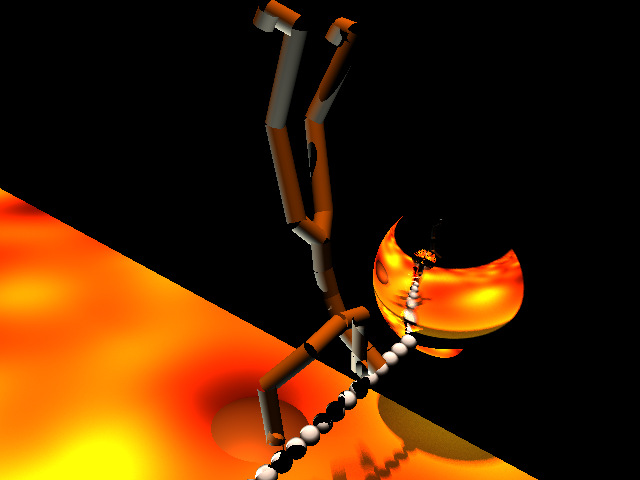
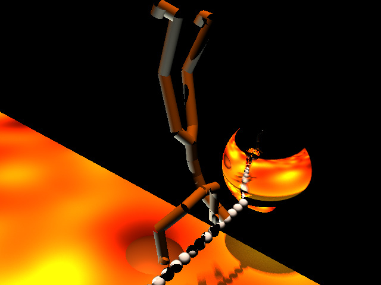

LAVAMAN
 

The floor is (perlin noise) lava!! Raytraced 10s movie; written in C++. Partner project with Jinny Choi.
Effects include:
- Soft Shadows (visible on the lava)
- Glossy Reflections (seen on the two large spheres)
- Perlin Noise, moving w/ respect to time (Lava)
- Cook-Torrance Reflectance (on the metal bridge and the cylinder-man to make him look armored)
Lavaman's movements are taken from the Carnegie Mellon Motion Capture Database.